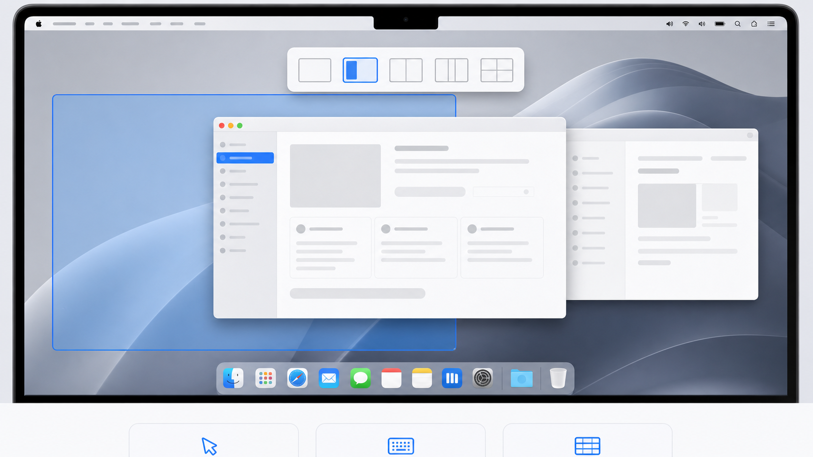

Drag snapping
See the destination before you let go.
Start dragging with your chosen modifier and PanePilot opens a compact picker at the top of the display. Hover a zone to preview the exact result, then release to place the window.

Window snapping for macOS
Put every window exactly where it belongs. Drag into a visual layout or snap from the keyboard without breaking your flow.
Move less. Arrange faster.
PanePilot lives quietly in the menu bar until you need it. Hold your chosen modifier, move a window, and the layouts for that display appear right where you are working.
Drag snapping
Start dragging with your chosen modifier and PanePilot opens a compact picker at the top of the display. Hover a zone to preview the exact result, then release to place the window.
esc steps back one level
Keyboard snap
Open the picker with a shortcut, choose a layout, then choose a zone. PanePilot consumes the snap keys so they do not spill into the app beneath.
Every shortcut is configurable, including multi-key drag modifiers.
Layouts for real work
Choose the arrangement that fits the display and the task. PanePilot includes balanced columns, dominant work areas, and compact supporting zones.
Two equal windows for side-by-side work.
A primary workspace with room for reference.
One large canvas and two supporting windows.
Fast scanning across three equal spaces.
Create, split, resize, merge, and rename zones to match the way you actually work.
Record the modifier combinations and keyboard snap trigger that suit your workflow.
Choose a layout and zone by number, then use Escape to step back or cancel cleanly.
Ready in a minute
Move PanePilot to Applications, grant Accessibility access, and choose your shortcuts. After that, it stays in the menu bar and gets out of the way.
Get the latest release from GitHub.
PanePilot needs access to identify and move windows.
Set the drag modifier and keyboard shortcut.
PanePilot is free and open source for macOS 13 and later.